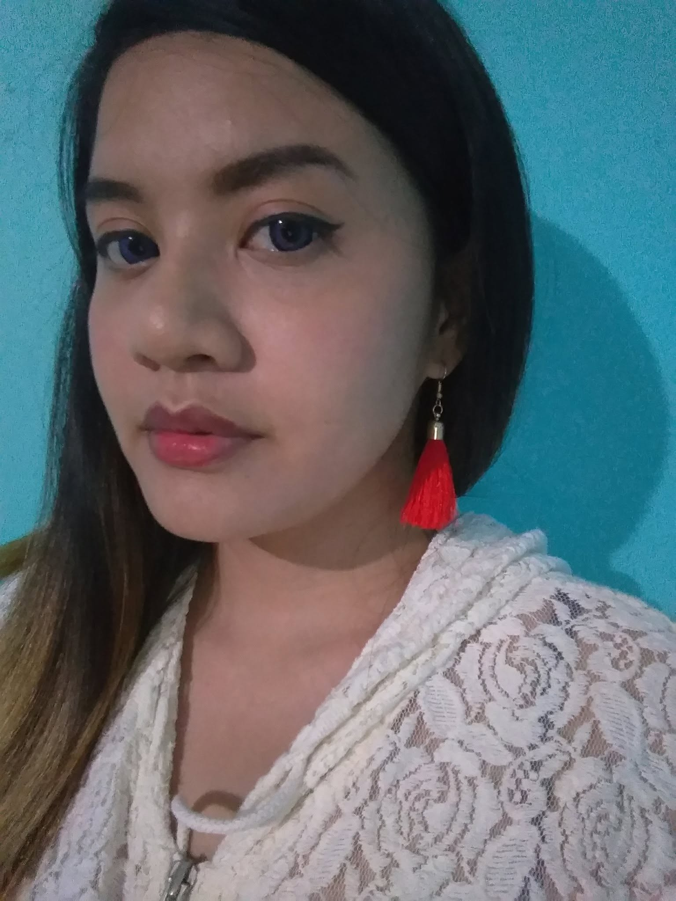

Ms. Tizza Rama Muñoz, BSN
Nutrition and Health Judge
Bachelor of Science in Nursing
Graduated 2012
Healthcare professional with a strong foundation in health care, patient education, and the importance of proper nutrition in promoting overall wellness.
Ms. Tizza Rama Muñoz is a Bachelor of Science in Nursing graduate with professional experience in the healthcare industry. Her background has equipped her with a strong foundation in health care, patient education, and the importance of proper nutrition in promoting overall wellness.
She has developed excellent skills in attention to detail, critical thinking, professional communication, and accurate documentation through her experience in the health sector. Her commitment to precision and evidence-based practice reflects the qualities of a dedicated and compassionate health professional.
Her healthcare background enables her to assess whether the nutrition messages presented are clear, appropriate, and beneficial in encouraging healthy lifestyle choices among learners.
She is honored to serve as a judge and support learners in promoting health, nutrition, and environmental stewardship through creativity and technology.